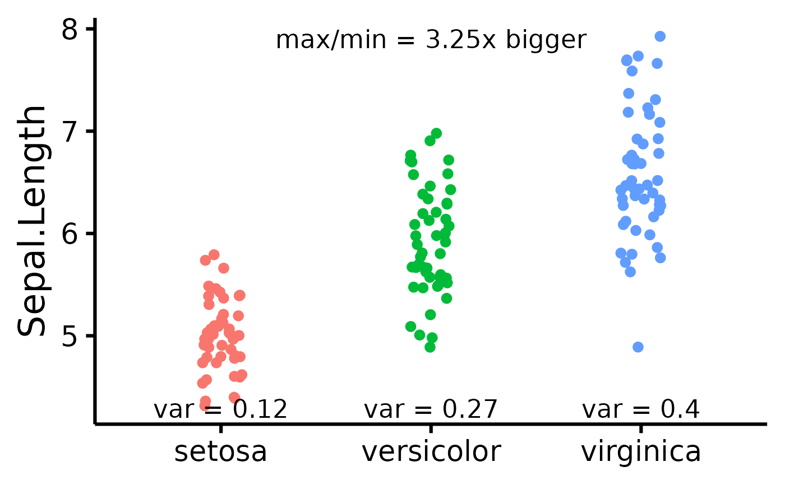
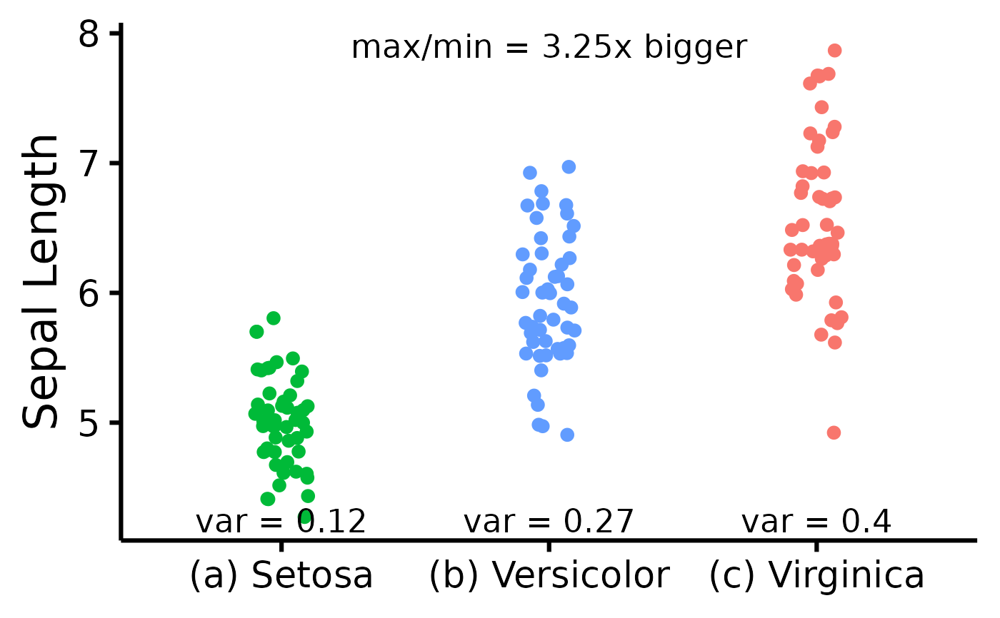

Attempt to visualize variance per group.
Usage
nice_varplot(
data,
variable,
group,
colours,
groups.labels,
grid = TRUE,
shapiro = FALSE,
ytitle = variable
)Arguments
- data
The data frame
- variable
The dependent variable to be plotted.
- group
The group by which to plot the variable.
- colours
Desired colours for the plot, if desired.
- groups.labels
How to label the groups.
- grid
Logical, whether to keep the default background grid or not. APA style suggests not using a grid in the background, though in this case some may find it useful to more easily estimate the slopes of the different groups.
- shapiro
Logical, whether to include the p-value from the Shapiro-Wilk test on the plot.
- ytitle
An optional y-axis label, if desired.
Value
A scatter plot of class ggplot attempting to display the group variances. Also includes the max variance ratio (maximum variance divided by the minimum variance).
See also
Other functions useful in assumption testing:
nice_assumptions, nice_density,
nice_normality, nice_qq,
nice_var. Tutorial:
https://rempsyc.remi-theriault.com/articles/assumptions
Examples
# Make the basic plot
nice_varplot(
data = iris,
variable = "Sepal.Length",
group = "Species"
)

# Further customization
nice_varplot(
data = iris,
variable = "Sepal.Length",
group = "Species",
colours = c(
"#00BA38",
"#619CFF",
"#F8766D"
),
ytitle = "Sepal Length",
groups.labels = c(
"(a) Setosa",
"(b) Versicolor",
"(c) Virginica"
)
)
